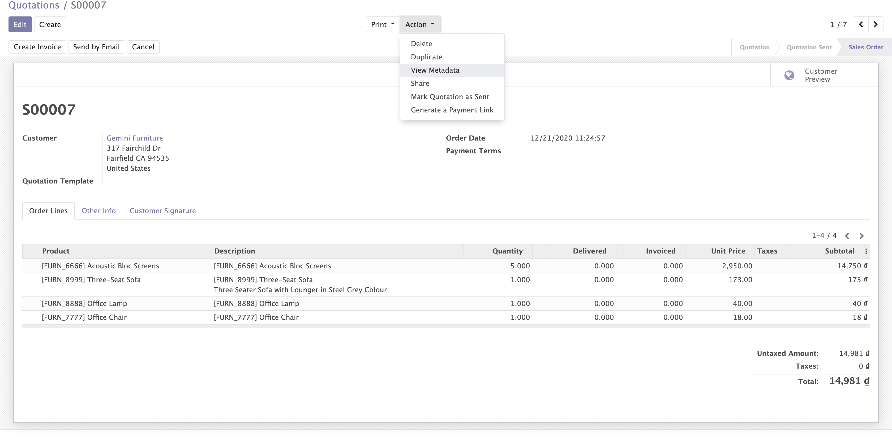

View Record Metadata
In normal mode (without developer mode), user can not see meta data of a record, because Odoo already turn it into developer mode and it causes many inconveniences in case they want to know when, and who created these record
Guideline
Just install module, and the action button to view meta data automatically show

So if you need to customize, improve this feature by your concrete business, feel free to contact us